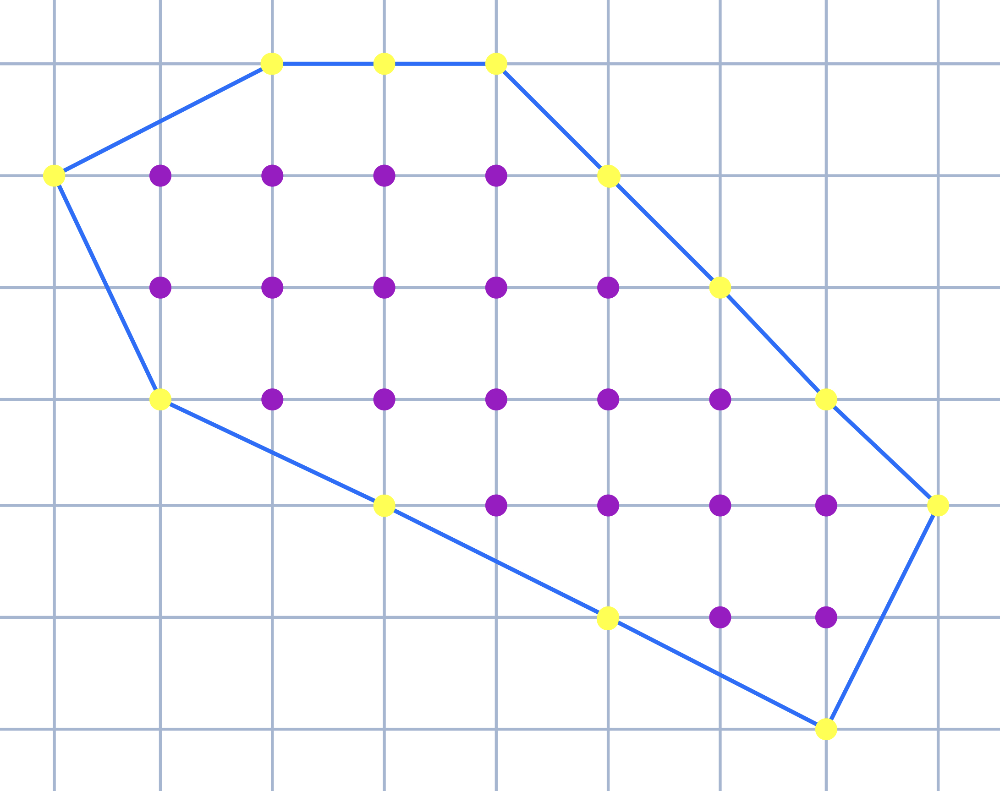
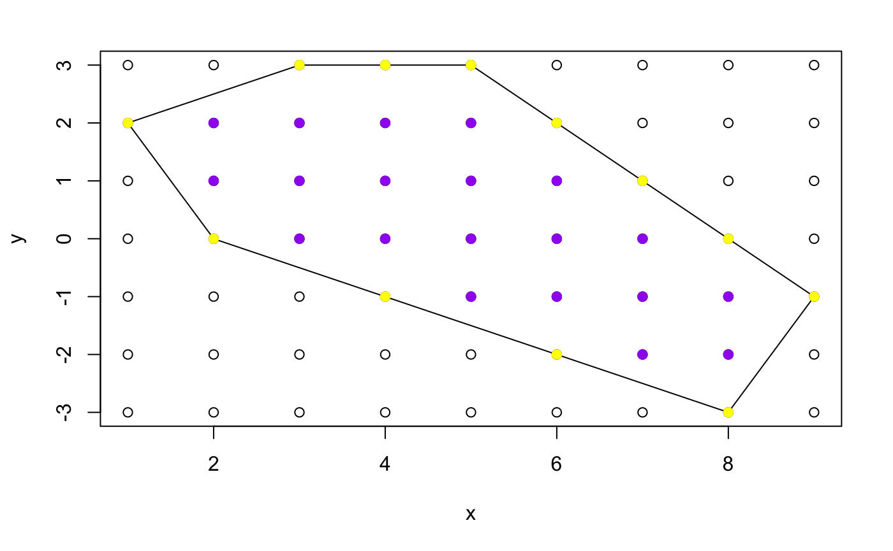
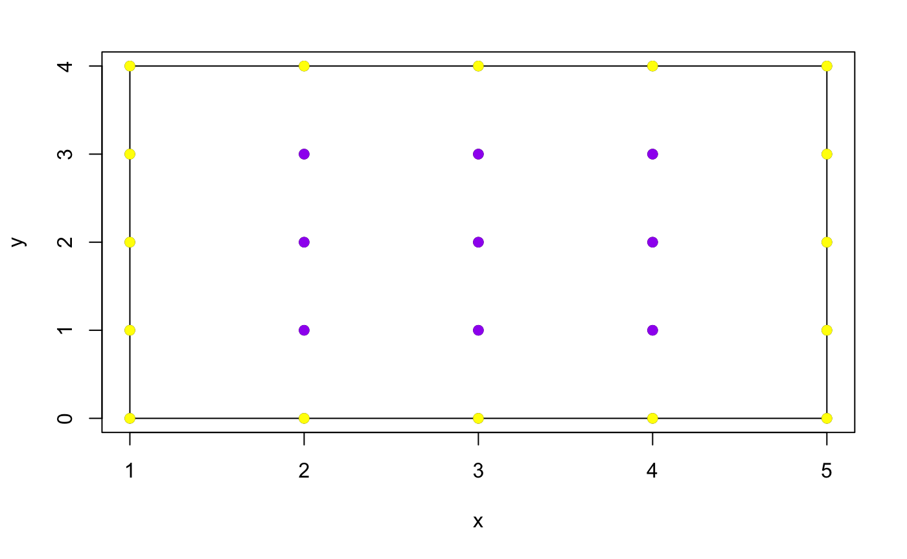
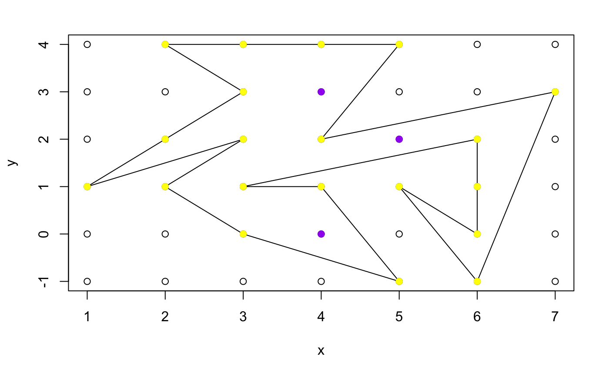

The area $A$ of a simple polygon in 2D with integer coordinates can be computed by Pick's theorem[16], which is a simple method and just need to know the number of integer coordinates points on the boundary, $B$; and number of integer coordinates points inside the polygon, $I$. Then $$A = I + \frac{1}{2}B -1.$$
Also, such polygon is known as lattice polygon, and such points are lattice points.
By Pick's theorem, the area of polygon in Figure 6.1 is $A = 20 + 6 - 1 = 25$.

Also, by Monte Carlo method:
from geometry_module import area_mc_method
x = [1, 3, 5, 9, 8, 2]
y = [2, 3, 3, -1, -3, 0]
print(area_mc_method(x, y, 5000, 'wind'))
## [1] 25.0008which shows that Pick's theorem return the right answer for the given convex polygon.
Pick's theorem also works for polygon with holes, as the area only depends on the number of lattice points.
A proof of Pick's theorem can be found here by Tom Davis.
It is also possible to imply Pick's theorem into a R function, as we have a function to test whether a point is inside the polygon or not, we just need to test all lattice points within the minimum rectangle that cover the polygon. But the point in polygon function might not work well for the points on the boundary, because in the Monte Carlo method we don't actually care about a few points on the boundary.
But still, we can first work out the point on the boundary by using the line equation method: check whether a point lies on the domain of the line equation that forms the edge, and get rid of them from the set of lattice points. Then we can test the rest points with the point in polygon function, and count the number that inside the polygon, also count the point on the boundary in previous stage.
Before we start, let's write a function that will get rid of the redundant point of a polygon. That is, if there is three or more points in a line, it will remove the point in-between.
from geometry_module import start_from_minx
# start_from_minx_v2() in R -> start_from_minx()
# start_from_minx(x, y)
If that is the case, then the gradient will be the same between those points, which allow us to allocate such points.
The only problem is, if a point is the vertex, then it lies on two edges, and we might have the repeat result. But that's also fine, just collect the index of the points on the boundary, and remove the duplicate. Infinity gradient is not even an issue: remember in Monte Carlo (Part 2), there is a function to find the line equation that in the form of $x = f(y)$. Another possible problem is the stability of the point in polygon function, but it works perfectly well with most of the polygons, so that should not be a problem in this case.
Below is the code in R:
from geometry_module import picks_theorem
# picks_theorem()
# picks_theorem(interior, boundary)
Now try it with the polygon at the beginning:
from geometry_module import area_mc_method
x = [1, 3, 5, 9, 8, 2]
y = [2, 3, 3, -1, -3, 0]
print(area_mc_method(x, y, 5000, 'wind'))

## [1] 25It also works well with a simple rectangle:
from geometry_module import picks_theorem, boundary_points, shoelace_area
# A shape with lattice vertices, so Pick's theorem applies directly.
x = [1, 3, 5, 5, 2, 1, 1]
y = [0, 0, 0, 4, 4, 4, 2]
b = boundary_points(x, y)
a = abs(shoelace_area(x, y))
interior = a - b / 2 + 1
print('boundary points :', b)
print('shoelace area :', a)
print('interior points :', interior)
print('Pick check :', picks_theorem(interior, b))

## [1] 16By the way, Monte Carlo method is working as usual:
from geometry_module import area_mc_method
# Monte Carlo on the same polygon, for comparison with Pick's theorem
x = [1, 3, 5, 9, 8, 2]
y = [2, 3, 3, -1, -3, 0]
print(area_mc_method(x, y, 5000, 'wind')[0])
## [1] 16Sometimes complicate function might not be working as usual for those basic polygons, so it is worth to test on them.
Let's see one more example:
from geometry_module import area_mc_method
xe7 = [5, 4, 7, 6, 5, 6, 6, 3, 4, 5, 3, 2, 3, 1, 3, 2]
ye7 = [4, 2, 3, -1, 1, 0, 2, 1, 1, -1, 0, 1, 2, 1, 3, 4]
print(area_mc_method(xe7, ye7, 5000, 'wind'))

## [1] 12@theonaku